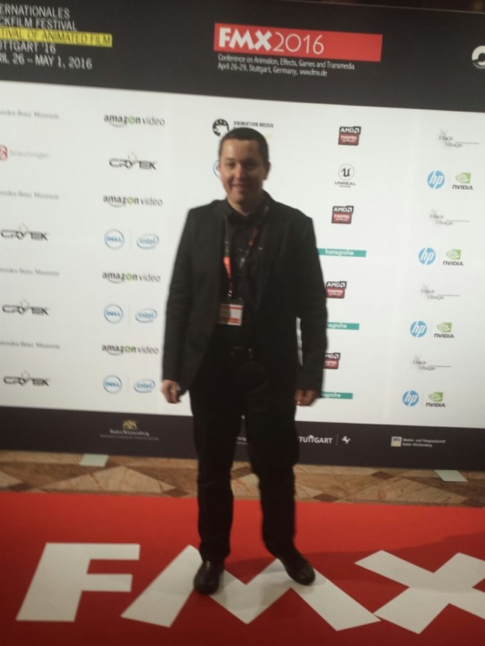
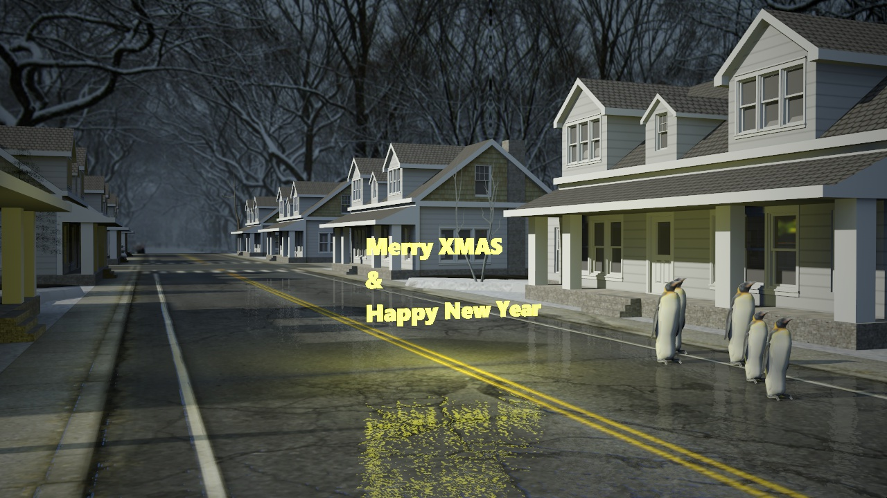

I was guest speaker at the FMX 2016 conference, and I must say that was a great experience!
Here you can watch brighter3d demo reel from the end of my talk:
Hi Brighter Renderers,
Great Spring, so new features and improvements came with it!
These improvements are from the Rendering Department, which is, in our
opinion, our strongest point.
First of all, for you the speed-lovers, we introduced a new Rendering
Method, namely Ambient Occlusion (AO). This is a blazingly fast rendering
method, giving a rough idea of the rendering in some seconds (depending on
scene). This is by no means an usable rendering result (at least compared
to the other two, which we recommend), but it gives a fast feedback on the
scene. You just select the Method in Settings, and hit Render button,
no additional tweakings needed.
You can adjust rays lengths AO power in render window.
Another Rendering Effect which may improve on your presentation workflow,
is an interesting effect named Depth of Field (DOF). You may have seen it
in many presentations. It gives authenticity to a rendering because in real
life, lenses do not reproduce the image as flat as a rendering does.
Use right mouse button to select focus point, and drag over DOF circle with right mouse button to adjust DOF power.
Also, great news for Architects. As a requested feature (and one we admit
is a useful one), Brighter3D now supports the Two Point Perspective from
SketchUp. As you may know, Architects may prefer to present their buildings
in a 2-point Perspective mode, because it may give a more realistic
appearance.
For a primer on perspectives, here’s a under 1 minute explanation:
And finally, for a smoother and higher quality renderings, we now support
full 32bit resolution per color channel. Now we speak high-end!
So, please enjoy a Brighter Spring! Ups, a Brighter3D Spring, that is.
Happy Renderings!

This update is a maintenance release.
We fixed some bugs and tweaked bits and pieces:
• file saving in JPEG was not working in some instances
• wrong transparency rendered when transparent background selected, on reflected surfaces
• minor GUI fixes and improvements
• on popular demand, now windows works as before for SketcUp version up to 2015, and for version 2016 it hides automatically – we are working for a solution
And, of course, we wish you some Merry renderings and Happy New Brighter Images in 2016!
Hi Fellow Brighters!
We’ve cooked some goodies for you to consume in this season approaching
times. We’ve polished some features and introduced a neat background
feature which will help a lot.
So, let’s say that BRDF function is unfortunately not so evident in it’s
usefulness. We encourage you to experiment and try to render on small
surfaces to see the real difference which gives authentic, realistic
results. BRDF is soundly implemented in Brighter3D, and working as
expected. However, you may have noticed that in the Materials Palette,
those with BRDF setting appeared in white (this was only a interface issue,
not anything wrong during rendering). We fixed that, and now they keep
their original “real” colour.
An installer bug annoyed us on certain situations – this bug didn’t
allowed to upgrade from previous versions; we fixed that.
We also improved artificial light sampling in some special cases.
This version is fully compatible with SketchUp 2016.
For those fortunate with a 4K monitor, it is now possible to maximize
windows on those monitors, for a splendid view of renderings and/or
Brighter use.
And finally, one great neat feature. You can now choose a background for
rendering, from various settings:
none - render is exporting as usual as a normal scene;
transparent - this is really useful when making product shots, the render
has a transparent background so you can then import the render in other
image manipulation programs for further editing; this setting only outputs
PNG files;
- daylight sun and sky - obviously this takes into consideration SketchUp's
appropiate settings;
- HDR map - you can put your HDR map of choice for further fine tuning,
like lighting, scenery, optical effects etc.;
Not to mention (again), all these with the fastest, brightest lighting
speed of rendering so Brighter3D-ish!
Happy renderings and see you soon.
Check older entries >>